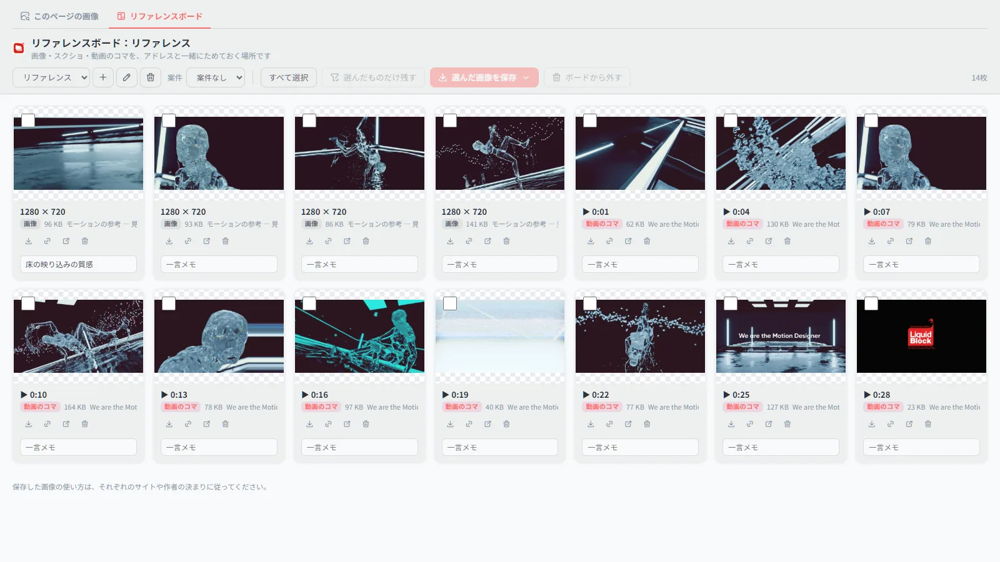

リファレンスボードは、ページの画像・スクリーンショット・動画のコマを、アドレスと一緒にためておく場所です。案件ごとにいくつでも作れて、一言メモや並べ替えもできます。ためたものは ZIP（アドレスの一覧つき）・PowerPoint・PDF にまとめて書き出せます。画像そのものを保存するので、元のページが消えても残ります。PRO の機能です（入れてから 30 日間のお試しでは使えます）。
参考の画像を集めていると、保存した画像がどのページのものだったか、あとで分からなくなります。動画の参考は、何秒の場面だったかを探し直すことになります。
リファレンスボードは、画像と一緒に、その出どころ（画像とページのアドレス・動画の再生位置）を残すための場所です。集めたものは、そのまま人に渡せる形（ZIP・PowerPoint・PDF）にまとめられます。
ボードに入れる 4 つの方法
- ページの画像から — 右の列の「スクショ」→「このページの画像」で画像を選んで「ボードに入れる」
- 右クリックで 1 枚ずつ — ページの画像を右クリック →「画像をリファレンスボードへ」
- 撮ったスクリーンショットから — 撮った画像の （1 枚）か、「まとめて保存」の「ボードへ」（全部）
- 動画のコマから — 「スクショ」の「動画のコマをボードへ」で、2・3・5・10 秒ごとに、10・20・30 枚
同じ画像を 2 度入れようとしても、増えません（「もう入っています」と出ます）。
動画のコマを、一定の間隔で撮る
見ている動画を、今の位置から○秒ごとに静止画にしてボードに入れます。撮り終わると、元の再生位置と再生の状態に戻ります。
- コマには再生位置（0:03 など）が付きます
- YouTube と Vimeo は、押すとその秒から再生されるアドレスになります。ほかのサイトは、ページのアドレスです
- よそのサイトから読み込んでいる動画など、ブラウザの決まりでコマを取り出せない動画もあります。そのときは「取り出せません」と出ます
案件ごとに分ける
ボードは、いくつでも作れます。ボードの画面の上で、作る・名前を変える・切り替える・消すができます。
「案件」の欄で、グループ（案件）と結びつけられます。グループを右クリック →「この案件のリファレンスボード」で、その案件のボードがすぐ開きます（まだ無ければ、案件の名前で作ります）。
メモと並べ替え
- 一言メモ — 画像の下の欄に「看板の色の参考」などと書けます。書き出したときも一緒に入ります
- 並べ替え — 画像をつかんで動かすと、順番を変えられます
- 選んだものだけ残す — 要るものを選んで押すと、それだけが並びます。チェックを外すと、その場で消えます
まとめて書き出す
画像を選んで「選んだ画像を保存」を押すと、保存のしかたを選べます。
1 枚ずつ保存
ダウンロードのフォルダに、順番に保存します。
ZIP にまとめる
元の画像と、アドレスの一覧（CSV）を 1 つにまとめます。一覧には、画像のアドレス・ページの題名とアドレス・大きさ・保存した日・メモが入ります。Excel でも文字化けせずに開けます。
PowerPoint・PDF に並べる
作る前に「どう並べますか？」と聞きます。等倍（元の大きさのまま。入りきらないときは全部を同じだけ縮める）か、縮尺をそろえる（どの画像も枠いっぱい）を選び、1 枚に並べる数（1・2・4・6・9）を決めます。各画像の下に番号・大きさ（動画のコマは再生位置）・アドレスが入り、最後に出典の一覧が付きます。アドレスは押すと開きます。
保存のされ方
ボードの画像は、お使いのブラウザの中にだけ保存します。当社のサーバーには送りません。画像そのものを保存するので、元のページが消えても見られます。拡張機能を外すと、ボードも一緒に消えます。残したいものは、先に書き出しておいてください。
よくある質問
Q. リファレンスボードは無料ですか？
PRO の機能です。入れてから 30 日間のお試しでは使えます。
Q. 動画を一定の間隔で静止画にできますか？
はい。「スクショ」の「動画のコマをボードへ」で、2・3・5・10 秒ごとに、10・20・30 枚撮れます。各コマには再生位置が付き、YouTube と Vimeo はその秒から再生されるアドレスになります。
Q. 集めた画像の出どころは残りますか？
画像のアドレス・ページの題名とアドレス・動画の再生位置を一緒に残します。ZIP にはアドレスの一覧（CSV）が入り、PowerPoint・PDF では各画像の下と最後の一覧に入ります。
Q. 元のページが消えたら、ボードの画像も消えますか？
消えません。画像そのものをブラウザの中に保存しています。
▶ 実際の操作を動画で見る
サイドバーで、ブックマークとタブをいっしょに管理する様子です。